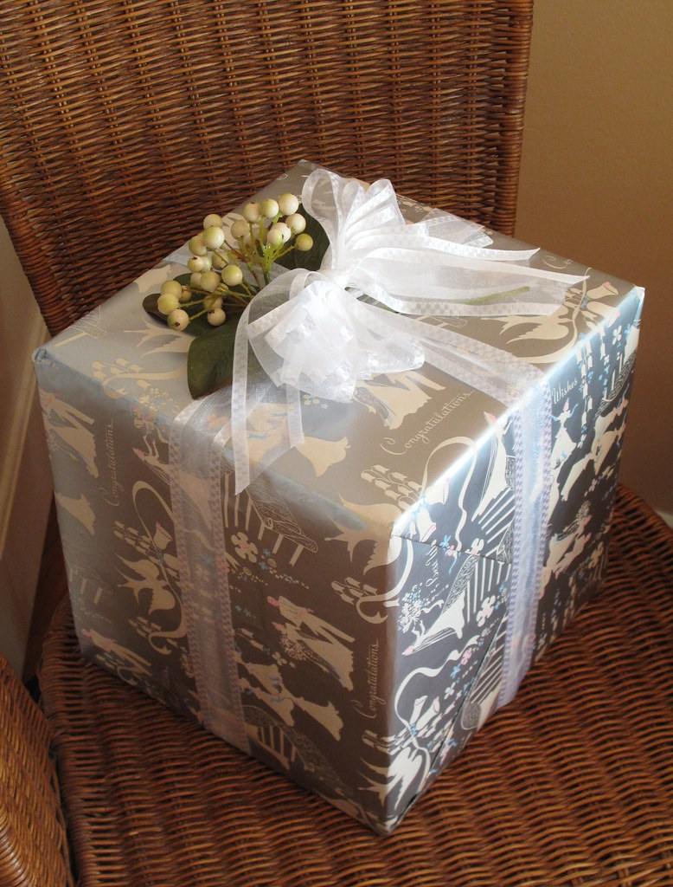
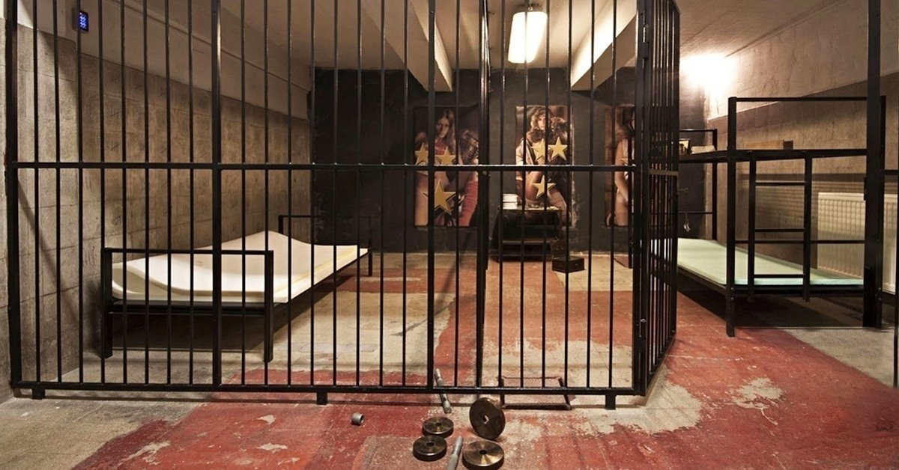

Szertartás
Gratuláció, nagy csoportkép, majd állófogadás
Az állófogadás kifejezetten azok számára javasolt akik nem hivatalosak a lagziba, így velük is tudunk kicsit beszélgetni. Aki a lagziba hivatalos, nyugodtan elindulhat, ebédelhet, stb vagy lásd következő pont.
Vendégvárás és szabadulás a Trap Factory-ban
A szertartás és vacsora közötti program opcionális:
Lehet szabadulni (erről infók lejjebb).
Lehet beszélgetni, iszogatni és eszegetni a teremben.
Csendespihenő gyerekeknek.
Stb, stb.
A lényeg, hogy 6-ra érkezzen meg mindenki.
Vacsora. Ezen túl sokat nem kell magyarázni. Elméletileg minden allergiást számba vettünk, ők sem fognak éhezni. Akinek mogyoró allergiája van, még most sikítson!
Torta!
Menyasszonytánc.
Buli, amíg bírjuk
A szertartás helyszíne a Ferences kolostor rom a Margitsziget kb közepén. A sziget főútja mellett található (Margithíd felöl a jobb oldalon), és az útról csak egy kőfal látszik belőle. Ez egy L alakú rom, azon belül lesz a szertartás.
Jó időt rendeltünk! De gumicsizmát és esernyőt helyzetfüggően lehet hozni. Vértizzadós, sokoldalas pályázatot adtunk be az önkormányzatnak a helyszín miatt, mindenképp megtartjuk :).
Eljutás a Trap Factory-ba:
Próbálunk összeszervezni autókat. Kérjük, segítsetek ebben, és megtalálni a szabad helyeket és igényeket. Csináltunk erre egy táblázatot.
Ingyenes parkolóhely a helyszínen gyakorlatilag korlátlanul rendelkezésre áll. Alapvetően azonban itt is a BKV-t javasoljuk, a 2-es villamos és Csepeli HÉV útvonalon, vagy a 4-6-os és Csepeli HÉV útvonalon. Ez kb egy bő óra a gyaloglással együtt. Fontos, hogy a Csepeli HÉV megy arra, nem a Tököli/Ráckevei! Leszállás a Szent Imre téren. A Csepel műveken belül ne aggódjunk a környék “jellegzetességein”, bármennyire is furának tűnik, jó helyre mutat a cím:
Trap Factory, Lakatos utca és Központi út sarka, Budapest, 1212
(a Színesfém utcán kell bemenni a Csepel Művek nagykapuján, mely a HÉV megállóból már látszik).
Hazafelé a Szent Imre téren több éjszakai busz is megtalálható.
A meghívókban jeleztük, hogy inkább financiális támogatásra van szükségünk. Ettől függetlenül nyugodtan lehet készülni személyes ajándékkal is, a lényeg hogy étkészletre és hasonlókra már nincs szükségünk. Aki ajándékba adna borítékot, de szeretné megtáncoltatni a menyasszonyt is, az megteheti kaparós sorsjegy, személyre szóló levél vagy bármilyen kreatív megoldás fejében. Ha valakinek korábban kell elmennie, nyugodtan máskor is odaadhatja az ajándékot/borítékot. Továbbá szeretnénk hangsúlyozni, hogy mindenki a lehetőségei szerint ajándékozzon, semmilyen elvárásunk nincs. Tényleg. Kivéve hogy mindenki érezze jól magát!
A Trap Factory-ban 10 szabadulószoba áll rendelkezésre. A meghívó mellé adtunk szórólapot, amiben le vannak írva, de a honlapjukon is meg lehet nézni őket. Mindegyik szoba más tematikájú és nehézségű. Csapatokba kell majd szerveződni, és szobát választani. Természetesen ingyenes program. A csapatok szervezésében segíteni fog a ceremóniamester és az ott dolgozók is, de ha nagyon elszórtan érkeztek, akkor érkezési sorrendben osztanak be szobába, amikor összegyűlt egy szobányi ember, ami 6 fő. Egy játék kb 1 óra, így elvileg akik időben odaérnek és nagyon ügyesek, akár két kört is szabadulhatnak (feltéve, hogy felszabadul éppen egy másik szoba is). A külföldi vendégeknek sem lesz gondjuk, elvileg a moderátorok angolul is tudnak; emellett a szobákban minden ki van írva angolul is.
